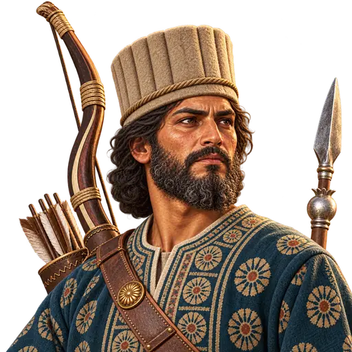
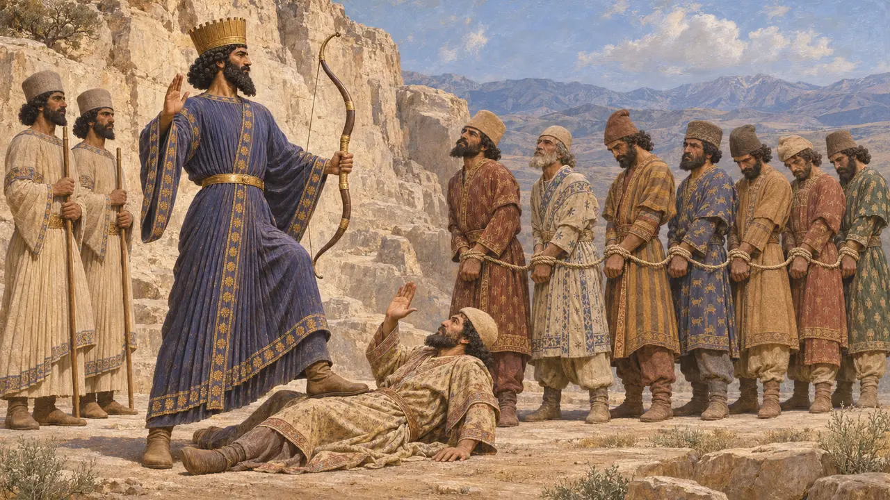
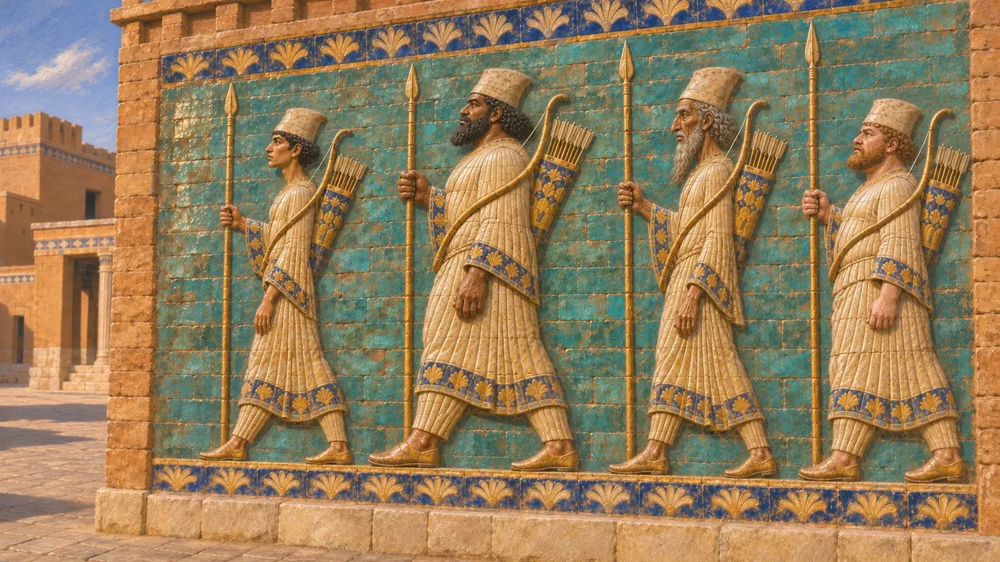
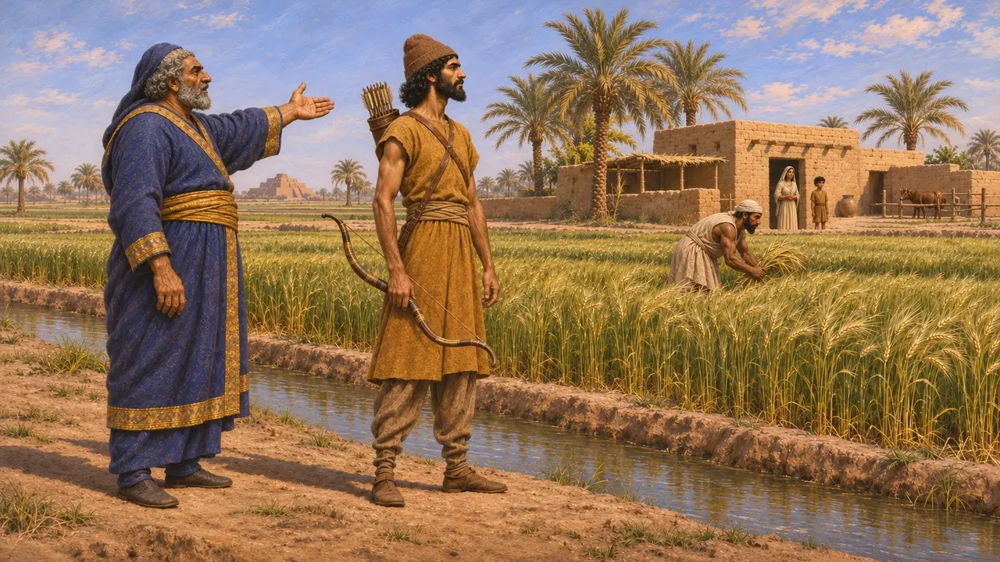
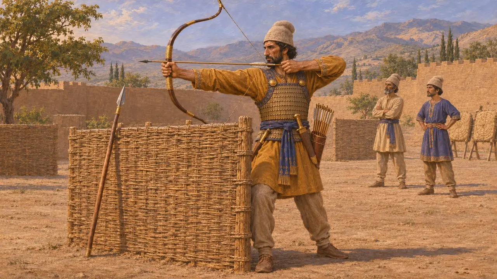
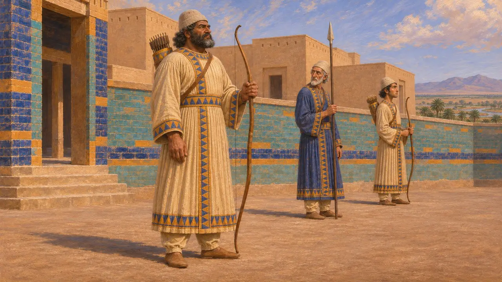

Arciere del Re
Arciere persiano addestrato dell'esercito del Re, Persia, 550-479 a.C. circa
L'arco era l'arma principale del fante persiano e un simbolo del potere regale. Erodoto afferma che i fanciulli persiani venivano addestrati al tiro fin dall'infanzia, e il Re stesso compariva come arciere sui rilievi e sulle monete. Il tiro con l'arco ebbe un ruolo di primo piano nelle battaglie persiane, e gli scrittori greci ricordarono a lungo le tempeste di frecce.
Nel gioco: Il gioco schiera l'Arciere del Re come arciere addestrato a sé stante. Gran parte della fanteria persiana sembra aver portato sia la lancia sia l'arco, perciò dividere lancieri e arcieri in unità distinte è una semplificazione.

Il Re come arciere
Nelle fontiNel rilievo di Behistun Dario regge un arco e poggia il piede su Gaumata abbattuto, mentre gli altri capi ribelli stanno legati davanti a lui. Nell'iscrizione della sua tomba a Naqsh-e Rostam afferma di essere un buon arciere sia a piedi sia a cavallo. Le monete d'oro e d'argento coniate dal 515-500 a.C. circa in poi mostrano un arciere coronato, di solito identificato con il Re.
DB relief; DNb; Briant, From Cyrus to Alexander, 2002

Arcieri in mattoni smaltati e pietra
Nelle fontiI pannelli di mattoni smaltati del palazzo di Dario a Susa mostrano file di soldati in lunghe vesti. Ciascuno porta una lancia, con un arco in spalla e una faretra sulla schiena. Molti di questi pannelli si trovano oggi al Louvre. Le guardie dei rilievi di Persepoli portano la stessa coppia di lancia e arco, il che fa pensare che un soldato reale fosse addestrato in entrambe le armi.
Excavation reports from Susa; Persepolis reliefs

Terra concessa in cambio di un arco
Nelle fontiI documenti babilonesi registrano lotti detti "terra dell'arco", tenuti in cambio del servizio militare alla corona. Tali possedimenti compaiono già sotto Dario, ma sono noti soprattutto dall'archivio dei Murashu di Nippur, databile tra il 455 a.C. e il 403 a.C. circa. A quell'epoca il servizio veniva in gran parte pagato in argento. Il sistema mostra come l'impero reclutasse arcieri tra i sudditi sedentari oltre che tra i Persiani.
M. Stolper, Entrepreneurs and Empire, 1985

Addestramento ed equipaggiamento
Racconto anticoErodoto racconta che ai ragazzi persiani, dai cinque ai vent'anni, si insegnava a cavalcare, a tirare con l'arco e a dire la verità. Descrive la fanteria persiana dell'esercito di Serse con berretti di feltro, tuniche con maniche, corazze a scaglie, scudi di vimini, lance corte, archi lunghi con frecce di canna e pugnali. A Platea, dice, i Persiani tiravano da dietro un muro di scudi di vimini, ma non avevano l'armatura pesante dei Greci.
Herodotus 1.136; Herodotus 7.61; Herodotus 9.61-63

Chi erano gli arcieri di mattoni
ContesoGli storici discutono ancora se gli arcieri di Susa rappresentino la guardia reale, spesso associata agli Immortali, o in generale soldati persiani ed elamiti. Le vesti sono di foggia cortigiana più che da campo. Lo schieramento in battaglia di arcieri e lancieri muniti di scudo è ricostruito soprattutto da brevi accenni greci, perciò le interpretazioni moderne della formazione variano.
Briant, From Cyrus to Alexander, 2002
Fonti
- Herodotus 7.61
- Herodotus 1.136
- Herodotus 9.61-63
- DNb; DB
- P. Briant, From Cyrus to Alexander, 2002
- M. Stolper, Entrepreneurs and Empire, 1985